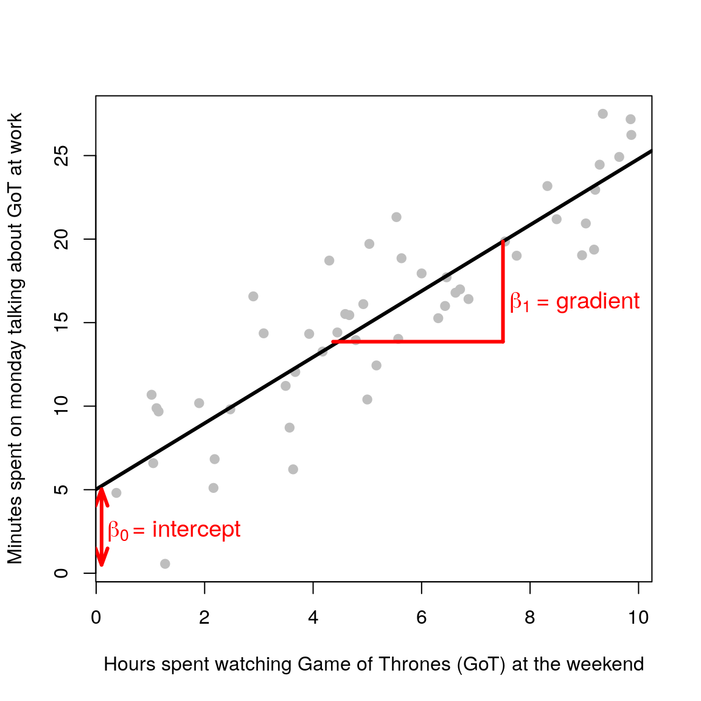
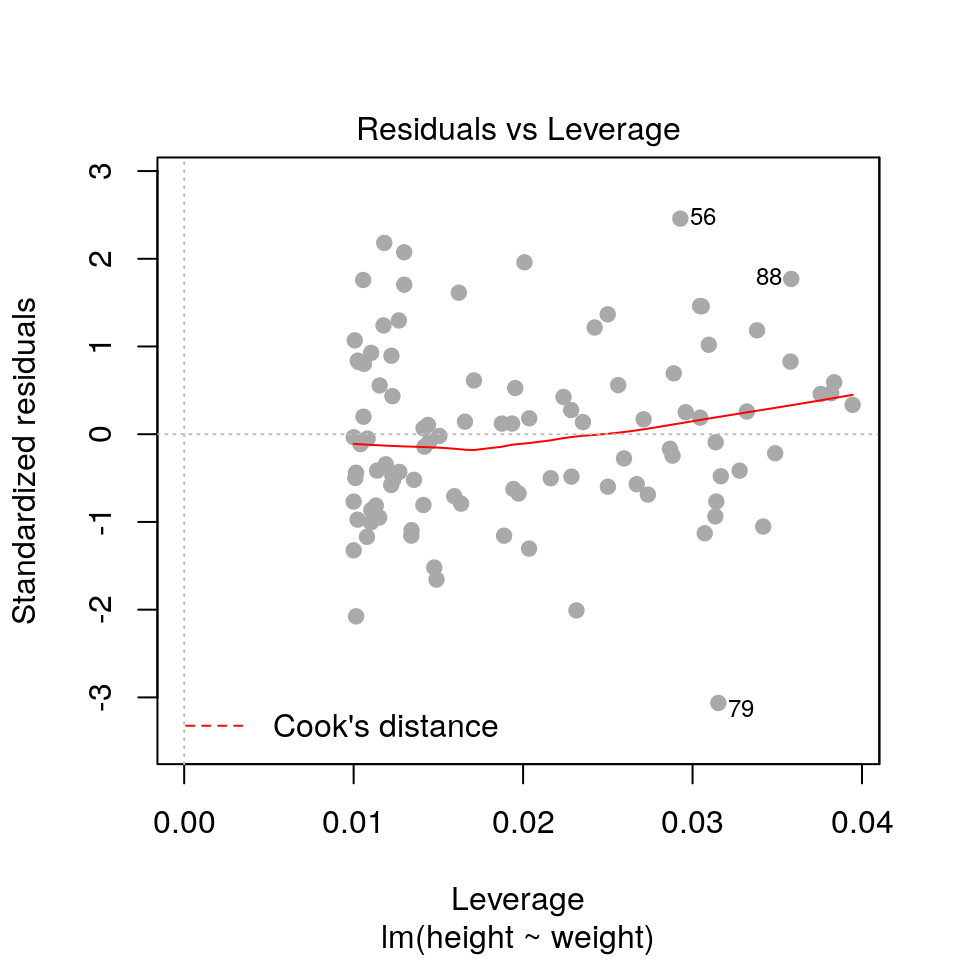

2 Linear models
Slides can be downloaded from:
2.1 Simple linear regression
In many scientific applications we are interested in exploring the relationship between a single response variable and multiple explanatory variables (predictors). We can do this by fitting a linear model. Linear models per se do not infer causality, i.e defining a variable as response or explanatory is somewhat arbitrary and depends on what the researcher is interested in. Causality can however be inferred through careful experimental design in a well-controlled setting.
Consider again the case of one response and one explanatory variable. From the previous chapter we know that this boils down to the equation of a line (\(y = mx +c\)). Let’s rename the parameters \(c\) and \(m\) to \(\beta_0\) and \(\beta_1\), in line with statistical naming convention1. It is just a change in name:
\[ \begin{aligned} y = c + mx\\ y = \beta_0 + \beta_1x \end{aligned} \]

Now suppose we measure \(n\) independent and identically distributed (i.i.d) normally distributed outcomes \(y_1,\ldots,y_n\) (e.g height of people) and we want to model their relationship with some explanatory variable \(x\) (e.g weight of people). The linear regression model is defined as follows:
\[ \begin{aligned} y_i & = \beta_0 + \beta_1x_i + \epsilon_i \\ \epsilon_i & \sim \mathcal{N}(0, \sigma^2) \end{aligned} \] \(i\) is an index that goes from 1 to \(n\) (the total number of observations). The equation is the same as before (\(y = \beta_0 + \beta_1x\)), but now we have added an error term \(\epsilon\). This term is needed because the straight line cannot go through all the data points (unless you have a very questionable dataset)! It represents the discrepancy between the model (the fitted straight line) and the observed data (grey points).
\(\epsilon\) is also known as the noise term. The reason is that in general our response variable has some uncertainty associated with it (e.g counting the number of birds in an area, quantifying gene expression using microarrays or RNA-seq, etc.). The statistical assumption in linear modelling is that these errors are normally distributed with mean zero and some standard deviation \(\sigma\) (mathematically this is written as \(\epsilon_i \sim \mathcal{N}(0, \sigma^2)\)). This means that the response variable is also assumed to be normally distributed. For the maths aficionados amongst you:
\[ y_i \sim \mathcal{N}(\beta_0 + \beta_1x_i, \sigma^2) \] Note that we do not make explicit assumptions about the explanatory variables (the \(x\)’s) i.e they don’t need to be normal.
The workflow in linear regression is as follows:
- Infer the model’s parameters \(\beta_0\) and \(\beta_1\).
- Check the model fit.
- Interpret the practical significance of the estimated parameters.
2.2 Doing it in R
Luckily for us, we do not need to worry about the mathematical intricacies of estimating the model’s parameters, R will do it for us. Let’s generate some fake data just to get things started.
set.seed(1453)
N <- 100 ## no. of observations
weight <- runif(n=N, min=60, max=100) ## hypothetical weights in kg
height <- 2.2*weight + rnorm(n=N, mean=0, sd=10) ## hypothetical heights in cm
plot(weight, height, pch=19, xlab='Weight (kg)', ylab='Height (cm)', col='grey')To fit a linear model we use the lm() function (always read the documentation of a function before using it!). This function requires a formula object which has the form of response ~ explanatory. So in our case this will be height ~ weight. R will then fit the following model 2:
\[ \mathrm{height}_i = \beta_0 + \beta_1\mathrm{weight}_i + \epsilon_i \] Let’s call the R function, plot the model fit and print the output.
## Linear model fit
fit <- lm(height ~ weight)
## Plot model fit
plot(weight, height, pch=19, xlab='Weight (kg)', ylab='Height (cm)', col='grey')
lines(weight, predict(fit), col='black', lwd=3)## Print result
print(fit)##
## Call:
## lm(formula = height ~ weight)
##
## Coefficients:
## (Intercept) weight
## 2.352 2.174This outputs two numbers, the (Intercept)= 2.352 cm and weight= 2.174 cm/kg. These are the \(\beta_0\) and \(\beta_1\) parameters.
The \(\beta_0\) parameter (intercept) is not very useful in this case, it basically tells us what’s the expected height of someone that weighs 0 kg (2.352 cm here). This is of course nonsense, but I’m highlighting it as a reminder that the assumptions that underlie these models can only be tested within the range of the observed data.
Aside: using the model to predict outside of the range of the observed data is called extrapolating. Oftentimes, statistical models are developed in order to be used to extrapolate (e.g. climate modelling). This is however, dangerous, as we can only assess the assumptions of the model over the range of the observed data. When extrapolating we have to assume that these relationships hold beyond the range of the data, which may or may not be reasonable (hence why weather forecast over short-time periods are OK, but climate forecasts are much more uncertain). Hence, we should always view the model as an approximation of the data generating process. In this particualr case, the interpretation of the parameters is not sensible when \(x = 0\) (weight = 0 kg), but makes sense in the range that we are interested in exploring. If the case where \(x = 0\) is important, then we would have to change the model to ensure that the predictions made sense at those values of \(x\).
The \(\beta_1\) parameter (gradient) tells us about the relationship between the outcome and explanatory variable. In this case, for every 1 kg increase in weight on average the height increases by 2.174 cm.
Warning: the notation used by R can come across as confusing. Although the returned value is labelled as
weight, in fact it corresponds to the \(\beta_1\) parameter that relates to the strength of linear relationship betweenweightandheight(i.e it is a gradient).
2.2.1 Using data frames
The lm() function also accepts data frames as input arguments.
## Create data frame
df <- data.frame(height=height, weight=weight)
head(df)## height weight
## 1 211.9054 86.59694
## 2 178.6420 77.28891
## 3 206.1585 95.01870
## 4 157.4803 70.66759
## 5 175.6296 79.84837
## 6 176.1113 83.98290## Fit linear model
fit <- lm(height ~ weight, data=df)2.2.2 Extended summary
The object returned by lm() contains further information that we can display using the summary() function.
summary(fit)##
## Call:
## lm(formula = height ~ weight, data = df)
##
## Residuals:
## Min 1Q Median 3Q Max
## -31.089 -6.926 -0.689 6.057 24.967
##
## Coefficients:
## Estimate Std. Error t value Pr(>|t|)
## (Intercept) 2.35229 7.11668 0.331 0.742
## weight 2.17446 0.08782 24.762 <2e-16 ***
## ---
## Signif. codes: 0 '***' 0.001 '**' 0.01 '*' 0.05 '.' 0.1 ' ' 1
##
## Residual standard error: 10.31 on 98 degrees of freedom
## Multiple R-squared: 0.8622, Adjusted R-squared: 0.8608
## F-statistic: 613.1 on 1 and 98 DF, p-value: < 2.2e-16That’s a lot of information, let’s unpick it line by line:
Call
This just states the arguments that were passed to the
lm()function. Remember it’sresponse ~ explanatory.Residuals
Some basic stats about the residuals (i.e the differences between the model fit and the observed data points). It is easier to plot a histogram of the residuals (shown in the next section), but these basic stats can already give us an indication of whether we have a symmetric distribution with zero mean (i.e we want the median to be close to zero, the third quartile (3Q) to be roughly equal to -1Q (first quartile) and the max to be approximately -min).
- Coefficients
Estimate
The
(Intercept)=2.352 cm andweight=2.174 cm/kg are the \(\beta_0\) and \(\beta_1\) parameters as discussed earlier.Std. Error
The standard error for that parameter. It tells us how confident we are in estimating that particular parameter. If the standard error is comparable or greater than the actual parameter estimate itself then that point estimate should not be trusted. We can also show the confidence intervals for the model parameters to highlight their uncertainty using the
confint()function:confint(fit, level=0.97) ## pick the 97% confidence intervals## 1.5 % 98.5 % ## (Intercept) -13.319698 18.024268 ## weight 1.981077 2.367844t valueandPr(>|t|)
This is the result of a hypothesis testing against the null hypothesis that the coefficient is zero.
Residual standard error
The square root of residual sum of squares/degress of freedom
## Residual standard error sqrt(sum(residuals(fit)^2) / fit$df.residual)## [1] 10.31254Multiple R-squared
Total variation = Regression (explained) variation + Residual (unexplained) variation
The \(R^2\) statistic (also known as the coefficient of determination) is the proportion of the total variation that is explained by the regression. In regression with a single explanatory variable, this is the same as the Pearson correlation coefficient squared:
cor(height, weight)^2## [1] 0.8621921F-statistic
\[ \text{F-statistic} = \frac{\text{Regression (explained) variation}}{\text{Residual (unexplained) variation}} \]
The F-statistic can be used to assess whether the amount of variation explained by the regression (\(M_1\)) is statistically significantly different compared to the null model (\(M_0\) - in this case the null model is the same as just taking the mean of the data). Large values of the F-statistic correspond to cases where the model fit is better for the more complex model compared to the null model. This test can be used to generate a p-value to assess whether the model fit is statistically significantly better given a pre-defined level of significance.
\[ \begin{aligned} M_0:~~~~~y_i &= \beta_0 + \epsilon_i\\ M_1:~~~~~y_i &= \beta_0 + \beta_1 W_i + \epsilon_i \end{aligned} \]
2.3 Model checking
The extended summary leads us nicely to the concept of model checking. In theory, we can fit an infinite number of different models to the same data by placing different assumptions/constraints. Recall:
All models are wrong but some are useful - George E.P. Box
In order to make robust inference, we must check the model fit
Model checking boils down to confirming whether or not the assumptions that we have placed on the model are reasonable. Our main assumption is that the residuals are normally distributed centred around zero. Let’s plot this:
hist(fit$residuals)The residuals are fairly normally distributed which is a good sign. R also provides us with the following diagnostic plots:
par(mfrow=c(2, 2))
plot(fit, pch=19, col='darkgrey')2.3.1 Residuals vs fitted values
plot(fit, pch=19, col='darkgrey', which=1)Here we are checking that the variance is constant along the fitted line3, and that there are no systematic patterns in the residuals.
A couple of example where this assumption is violated.
2.3.2 Residuals vs fitted values (scale-location)
plot(fit, pch=19, col='darkgrey', which=3)This is similar to the first plot but on a different scale.
2.3.3 Residuals vs. leverage
plot(fit, pch=19, col='darkgrey', which=5)
- Leverage: a measure of how isolated individual points are in relation to other points
- Cook’s Distance: a measure of how influential a point is to the regression
These measures help us identify potential outliers.
2.3.4 QQ plots
plot(fit, pch=19, col='darkgrey', which=2)Here we are checking that the assumption of normally distributed errors is reasonable. Points should follow the dashed line.
2.4 Practical 1
We will use the fruitfly dataset (Partridge and Farquhar (1981)) introduced in the “Advanced Visualisation and Data Wrangling in R”, which is summarised again here (do not worry about the details of the study for now, this is only included for the sake of completeness):
A cost of increased reproduction in terms of reduced longevity has been shown for female fruitflies, but not for males. We have data from an experiment that used a factorial design to assess whether increased sexual activity affected the lifespan of male fruitflies.
The flies used were an outbred stock. Sexual activity was manipulated by supplying individual males with one or eight receptive virgin females per day. The longevity of these males was compared with that of two control types. The first control consisted of two sets of individual males kept with one or eight newly inseminated females. Newly inseminated females will not usually remate for at least two days, and thus served as a control for any effect of competition with the male for food or space. The second control was a set of individual males kept with no females. There were 25 males in each of the five groups, which were treated identically in number of anaesthetisations (using \(\mathrm{CO}_2\)) and provision of fresh food medium.
Download the data file from here and save it to your working directory.
Since we are working with data.frame() objects, where appropriate, we have provided examples using both base R or tidyverse (for those of you who attended the Advanced Visualisation and Data Wrangling workshop).
ff <- readRDS("fruitfly.rds")head(ff)## partners type longevity thorax sleep
## 1 8 Inseminated 35 0.64 22
## 2 8 Inseminated 37 0.68 9
## 3 8 Inseminated 49 0.68 49
## 4 8 Inseminated 46 0.72 1
## 5 8 Inseminated 63 0.72 23
## 6 8 Inseminated 39 0.76 83For the purpose of this practical we will assume that the no female case is the control case, whilst the inseminated and virgin female cases are the treatment cases.
- partners: number of companions (0, 1 or 8)
- type: type of companion (inseminated female; virgin female; control (when partners = 0))
- longevity: lifespan, in days
- thorax: length of thorax, in mm
- sleep: percentage of each day spent sleeping
longevity against thorax. What does the relationship look like?
- Fit a linear model with lifespan as response variable and thorax length as explanatory variable.
- Display a summary of the fit, together with the 97% confidence interval for the estimated parameters.
- Show the diagnostic plots for the model.
2.5 Prediction
One of the key benefits of fitting a statistical model is that we can use it to produce predictions of the response variable for new values of the explanatory variable(s). We can do this using the predict() function in R. For example, in the fruitflies example above, we may want to produce estimates of average longevity for given values of thorax. To do this we must create a new data.frame object containing all the values of explanatory variables that we want to use for our prediction.
Note: we only require the explanatory variables in this new data frame, the response variable will be generated from the model.
For example, if we wanted to produce an estimate of longevity for an average individual with a thorax length of 0.8mm, we can run:
## produce predicted longevity for thorax = 0.8mm
newdata <- data.frame(thorax = 0.8)
predict(fit, newdata)## 1
## 54.41478We can also use this to produce confidence or prediction intervals as follows:
## produce predicted longevity for thorax = 0.8mm
newdata <- data.frame(thorax = 0.8)
predict(fit, newdata, interval = "confidence", level = 0.97)## fit lwr upr
## 1 54.41478 51.64686 57.18269Note: If you predict without an
intervalargument, thepredict()function returns avector, otherwise it returns amatrix.
Aside: there are two types of intervals that you might want to produce: confidence or prediction intervals.
- Confidence intervals: these correspond to the uncertainty surrounding our estimate of an average individual (i.e. it represents the uncertainty in the mean: \(y = \beta_0 + \beta_1 x\)
- Prediction intervals: these correspond to the uncertainty surrounding an individual observation: \(y_i = \beta_0 + \beta_1 x_i + \epsilon_i\).
If the model fits well, then we would expect \(100(1 - \alpha)\)% of the individual measurements to lie within the prediction interval, where \(\alpha\) is the significance level (so \(\alpha = 0.03\) corresponds to a 97% confidence interval).
The predict() function can be used as a very general way to produce plots of the fitted values over the observed data. For example, let’s consider that we wish to add our fitted regression line to our observed data plot.
plot(longevity ~ thorax, data = ff, pch = 19, col='darkgrey')There are various ways to add the correct regression line to this plot, but we will show you a general way that can be used for lots of different types of models. Firstly, we generate a range of \(x\)-coordinates that we wish to predict to e.g.
## create new data frame to predict to
newdata <- data.frame(thorax=seq(min(ff$thorax), max(ff$thorax), length.out=50))We then have to use the model to predict the mean longevity at each of these thorax values:
## predict longevity form the model
newdata <- cbind(newdata, longevity=predict(fit, newdata))Just as an illustration we will overlay these predictions onto the original scatterplot as points:
## add predicted points to original plot
plot(longevity ~ thorax, data = ff, pch = 19, col='darkgrey')
points(longevity ~ thorax, data = newdata, pch = 19, col = "red")So we have used the predict() function to produce predicted coordinates that we can overlay on the original scatterplot. In practice we would usually plot these predictions as a line rather than points. This approach is particularly useful if the predictions that we wish to plot are not straight lines (such as when we generate confidence or prediction intervals). To complete this example we will now plot the fitted line and associated confidence interval as follows:
## create new data frame to predict to
newdata <- data.frame(thorax=seq(min(ff$thorax), max(ff$thorax), length.out=50))
## produce predictions and intervals
newdata <- cbind(newdata, predict(fit, newdata, interval="confidence", level=0.97))
newdata$longevity <- newdata$fit
newdata$fit <- NULL## plot fitted line against the raw data
plot(longevity ~ thorax, data = ff,
pch = 19, col='darkgrey',
main = "Fitted regression line
with 97% confidence interval")
lines(longevity ~ thorax, data = newdata)
lines(lwr ~ thorax, data = newdata, lty = 2)
lines(upr ~ thorax, data = newdata, lty = 2)## plot fitted line against the raw data
ggplot(mapping =
aes(x = thorax, y = longevity)) +
geom_point(data = ff) +
geom_line(data = newdata) +
geom_ribbon(
aes(ymin = lwr, ymax = upr),
data = newdata, alpha = 0.5)2.6 Multiple linear regression
So far we have looked at examples with one response and one explanatory variable. In most applications we will have several variables that affect our outcome. Extending our simple linear regression model to accommodate multiple explanatory variables is straightforward, we just add them to the model.
Using our illustrative example of height vs weight, let’s add another explanatory variable, for example, the mean height of the individual’s parents (heightParents). Our linear model is defined as follows:
\[ \begin{aligned} y_i & = \beta_0 + \beta_1x_{1i} + \beta_2x_{2i} + \epsilon_i \\ \epsilon_i & \sim \mathcal{N}(0, \sigma^2) \end{aligned} \] Or in English:
\[ \begin{aligned} \mathrm{height}_i & = \beta_0 + \beta_1\mathrm{weight}_i + + \beta_2\mathrm{heightParents}_i+ \epsilon_i \\ \epsilon_i & \sim \mathcal{N}(0, \sigma^2) \end{aligned} \]
Let us make up some data again and plot it.
set.seed(451)
## no. of observations
N <- 100
## hypothetical weights in kg
weight <- runif(n=N, min=60, max=100)
## hypothetical mean heights of parents in cm
heightParents <- runif(n=N, min=130, max=210)
## hypothetical heights in cm
height <- 0.1*weight + 1.05*heightParents + rnorm(n=N, mean=0, sd=10)
## store as df
df <- data.frame(weight=weight, heightParents=heightParents, height=height)
## Plot
library(scatterplot3d) ## library needed for 3D plotting
scatterplot3d(weight, heightParents, height, pch=19, xlab='Weight (kg)',
ylab='Height of Parents (cm)', zlab='Height (cm)', color='grey')Note how by adding another explanatory variable we are spreading the observations across an additional dimension. That is, we go from a 2D plot to a 3D plot (if we add a third explanatory variable we would need a 4D plot). It is important to keep this in mind; the more explanatory variables we add the more we spread our data thinly across multiple dimensions. In practice, this means that our observations will be sparsely scattered across a high dimensional space, making it hard to fit a robust linear model. In the limit, when we have more explanatory variables than observations, we would not be able to fit a linear model at all (unless we employ a different statistical framework and impose further assumptions/constraints).
The objective of linear modelling is still the same, finding the “best” straight line, or in this case a hyperplane (a line in higher dimensions). You can think of a hyperplane as a (rigid) sheet of paper, where the objective is to place it such that it passes as close as possible to the observed data.
To fit a multiple linear regression model we use the lm() function again and pass the appropriate formula object which has the form of response ~ explanatory_1 + explanatory_2. In in our case this will be height ~ weight + heightParents.
fit <- lm(height ~ weight + heightParents, df)Let us plot the resultant model first (i.e the hyperplane).
hFig <- scatterplot3d(weight, heightParents, height, pch=19, xlab='Weight (kg)',
ylab='Height of Parents (cm)', zlab='Height (cm)', color='grey')
hFig$plane3d(fit, draw_polygon=TRUE)Let us look at the fit’s summary
summary(fit)##
## Call:
## lm(formula = height ~ weight + heightParents, data = df)
##
## Residuals:
## Min 1Q Median 3Q Max
## -28.578 -6.052 0.235 6.027 27.829
##
## Coefficients:
## Estimate Std. Error t value Pr(>|t|)
## (Intercept) -1.65589 10.70833 -0.155 0.877
## weight 0.11790 0.09198 1.282 0.203
## heightParents 1.04644 0.04707 22.233 <2e-16 ***
## ---
## Signif. codes: 0 '***' 0.001 '**' 0.01 '*' 0.05 '.' 0.1 ' ' 1
##
## Residual standard error: 10.19 on 97 degrees of freedom
## Multiple R-squared: 0.8372, Adjusted R-squared: 0.8338
## F-statistic: 249.4 on 2 and 97 DF, p-value: < 2.2e-16Same as before, the (Intercept)= -1.656 cm, weight= 0.1179 cm/kg and heightParents= 1.046 cm/cm are the \(\beta_0\), \(\beta_1\) and \(\beta_2\) parameters.
- The \(\beta_0\) parameter (intercept) is the expected height of someone that weighs 0 kg and whose parents have a mean height of 0 cm. Again, this parameter is not useful in this case.
- The \(\beta_1\) parameter tells us about the relationship between
heightandweight. For every 1 kg increase in weight on average the height increases by 0.1179 cm. - The \(\beta_2\) parameter tells us about the relationship between
heightandheightParents. For every 1 cm increase in mean height of parents on average the person’s height increases by 1.046 cm.
As before we look at the model diagnostic plots to check the model fit.
par(mfrow=c(2, 2))
plot(fit, pch=19, col='darkgrey')We can extend this framework to any arbitrary large number of explanatory variables. The model is:
\[ \begin{aligned} y_i & = \beta_0 + \beta_1x_{1i} + \ldots + \beta_px_{pi} + \epsilon_i \\ \epsilon_i & \sim \mathcal{N}(0, \sigma^2) \end{aligned} \] Where \(i\) is an index that goes from 1 to \(n\) (the total number of observations) and \(p\) is the total number of explanatory variables. Hopefully it is now clearer why statisticians use Greek letters \(\beta_0, \ldots, \beta_p\), else the equation would be too long to write in English
outcome = intercept + ((gradient outcome vs explanatory variable 1) x (explanatory variable 1)) + ((gradient outcome vs explanatory variable 2) x (explanatory variable 2)) + …)
2.7 Practical 2
We will use the fruitfly dataset (Partridge and Farquhar (1981)) as we did in the previous practical
- Fit a linear model with lifespan as response variable and thorax length and sleep as explanatory variables
- Display a summary of the fit, together with the 97% confidence intervals for the estimated parameters
- What’s the practical significance of the estimated parameters?
- Show the diagnostic plots for the model, what can you say about the model fit?
- What is the total variation explained by
thoraxandsleep?
2.8 Categorical explanatory variables
So far we have only considered continuous explanatory variables. How do we include categorical explanatory variables? Let’s go back to our height vs weight toy example and consider sex as an additional categorical variable. Let us simulate some data.
set.seed(101)
## no. of observations
N <- 50
## hypothetical weights in kg
weightMale <- runif(n=N, min=60, max=100)
## hypothetical weights in kg
weightFemale <- runif(n=N, min=60, max=100)
## hypothetical heights in cm
heightMale <- 2.2*weightMale + rnorm(n=N, mean=0, sd=10) + 40
## hypothetical heights in cm
heightFemale <- 2.2*weightFemale + rnorm(n=N, mean=0, sd=10) + 2
height <- c(heightMale, heightFemale)
weight <- c(weightMale, weightFemale)
sex <- c(rep('Male', N), rep('Female', N))
## Store in data frame
df <- data.frame(weight=weight, sex=sex, height=height)## Plot
plot(height ~ weight, data=df,
pch=19, xlab='Weight (kg)',
ylab='Height (cm)', col='grey')ggplot(df) +
geom_point(
aes(x = weight, y = height)) +
xlab("Weight (kg)") +
ylab("Height (cm)")Data looks similar as before, albeit with a larger variation. We can fit a model as we have done before and assess the relationship between height and weight.
## Linear model fit
fit <- lm(height ~ weight, data=df)## predictions
newdata <- data.frame(
weight = seq(min(df$weight),
max(df$weight), length.out = 50))
newdata$height <- predict(fit, newdata)
## Plot model fit
plot(height ~ weight, data = df,
pch=19, xlab='Weight (kg)',
ylab='Height (cm)', col='grey')
lines(height ~ weight, data = newdata,
col='black', lwd=3)## plot model fit
newdata <- data.frame(
weight = seq(min(df$weight),
max(df$weight), length.out = 50))
newdata <- mutate(newdata,
height = predict(fit, newdata))
ggplot(mapping =
aes(x = weight, y = height)) +
geom_point(data = df) +
geom_line(data = newdata) +
xlab("Weight (kg)") +
ylab("Height (cm)")## Print result
summary(fit)##
## Call:
## lm(formula = height ~ weight, data = df)
##
## Residuals:
## Min 1Q Median 3Q Max
## -40.753 -20.526 2.579 18.889 37.925
##
## Coefficients:
## Estimate Std. Error t value Pr(>|t|)
## (Intercept) 33.0877 15.2188 2.174 0.0321 *
## weight 2.0493 0.1859 11.024 <2e-16 ***
## ---
## Signif. codes: 0 '***' 0.001 '**' 0.01 '*' 0.05 '.' 0.1 ' ' 1
##
## Residual standard error: 22.08 on 98 degrees of freedom
## Multiple R-squared: 0.5536, Adjusted R-squared: 0.549
## F-statistic: 121.5 on 1 and 98 DF, p-value: < 2.2e-16If we colour the data by sex it becomes obvious that this extra variation is due to sex.
plot(height ~ weight, data = df,
pch = 19)
points(height ~ weight,
pch = 19,
data = df[df$sex == "Female", ],
col = "green")
points(height ~ weight,
pch = 19,
data = df[df$sex == "Male", ],
col = "blue")
legend(par("usr")[1] * 1.1,
par("usr")[4] * 0.9,
legend = c("Female", "Male"),
pch = c(19, 19),
col = c("green", "blue"))ggplot(df,
aes(x = weight, y = height,
colour = sex)) +
geom_point()sex is an important covariate and should therefore be added to the model. That is, we need a model that has different regression lines for each sex. The syntax for the R formula remains exactly the same response ~ explanatory_1 + ... + explanatory_p, but behind the scenes categorical variables are treated differently to continuous variables.
To cope with categorical variables (known as factors in R’s lingo), we introduce a dummy variable.
\[ S_i = \left\{\begin{array}{ll} 1 & \mbox{if $i$ is male},\\ 0 & \mbox{otherwise} \end{array} \right. \]
Here, female is known as the baseline/reference level
The regression is:
\[ y_i = \beta_0 + \beta_1 S_i + \beta_2 x_i + \epsilon_i \] Or in English:
\[
\begin{aligned}
\mathrm{height}_i & = \beta_0 + \beta_1\mathrm{sex}_i + \beta_2\mathrm{weight}_i + \epsilon_i \\
\end{aligned}
\] Where sex is the dummy variable S_i that can take the value of 0 (female) or 1 (male)
The mean regression lines for male and female now look like this:
- Female (
sex=0)
\[ \begin{aligned} \mathrm{height}_i & = \beta_0 + (\beta_1 \times 0) + \beta_2\mathrm{weight}_i\\ \mathrm{height}_i & = \beta_0 + \beta_2\mathrm{weight}_i \end{aligned} \]
- Male (
sex=1)
\[ \begin{aligned} \mathrm{height}_i & = \beta_0 + (\beta_1 \times 1) + \beta_2\mathrm{weight}_i\\ \mathrm{height}_i & = (\beta_0 + \beta_1) + \beta_2\mathrm{weight}_i \end{aligned} \] By introducing a dummy variable, we have now simplified the problem into two regression lines, where the intercept is:
- Female: \(\beta_0\)
- Male: \(\beta_0 + \beta_1\)
Whilst the gradient is \(\beta_2\) in both cases.
## Linear model fit
fit <- lm(height ~ sex + weight, data=df)## Print result
summary(fit)##
## Call:
## lm(formula = height ~ sex + weight, data = df)
##
## Residuals:
## Min 1Q Median 3Q Max
## -21.106 -6.853 -1.162 6.691 22.111
##
## Coefficients:
## Estimate Std. Error t value Pr(>|t|)
## (Intercept) 1.8269 7.0411 0.259 0.796
## sexMale 39.2220 1.9976 19.634 <2e-16 ***
## weight 2.1931 0.0841 26.078 <2e-16 ***
## ---
## Signif. codes: 0 '***' 0.001 '**' 0.01 '*' 0.05 '.' 0.1 ' ' 1
##
## Residual standard error: 9.95 on 97 degrees of freedom
## Multiple R-squared: 0.9103, Adjusted R-squared: 0.9084
## F-statistic: 491.9 on 2 and 97 DF, p-value: < 2.2e-16The sexMale coefficient is \(\beta_1\) in the equations above and it represents the difference in intercept between males and females (remember that the gradient is the same for both sexes). Thus for the same weight, men on average will be sexMale=39.2 cm taller than females.
To plot the fitted lines, we can use a similar trick using predict() as before. This time we need to produce predictions using all relevant combinations of explanatory variables: weight and sex in this case. A useful function to do this is expand.grid():
## create dataset to predict to
newdata <- expand.grid(
weight = seq(min(df$weight),
max(df$weight), length.out = 50),
sex = c("Female", "Male"))
## generate predictions
newdata <- cbind(newdata,
height = predict(fit, newdata))
## plot fitted lines against the data
plot(height ~ weight, data = df,
pch = 19)
points(height ~ weight,
pch = 19,
data = df[df$sex == "Female", ],
col = "green")
points(height ~ weight,
pch = 19,
data = df[df$sex == "Male", ],
col = "blue")
lines(height ~ weight,
data = newdata[
newdata$sex == "Female", ],
col = "green")
lines(height ~ weight,
data = newdata[
newdata$sex == "Male", ],
col = "blue")
legend(par("usr")[1] * 1.1,
par("usr")[4] * 0.9,
legend = c("Female", "Male"),
pch = c(19, 19),
col = c("green", "blue"))## create dataset to predict to
newdata <- expand.grid(
weight = seq(min(df$weight),
max(df$weight), length.out = 50),
sex = c("Female", "Male"))
## generate predictions
newdata <- mutate(newdata,
height = predict(fit, newdata))
## plot fitted lines against the data
ggplot(mapping =
aes(x = weight, y = height,
colour = sex)) +
geom_point(data = df) +
geom_line(data = newdata)Note the baseline/reference level in R is automatically taken to be the first factor level.
levels(df$sex)## [1] "Female" "Male"We can change this by re-ordering the levels if we wanted to.
df$sex <- factor(df$sex, levels = c('Male', 'Female'))## Linear model fit
fit <- lm(height ~ sex + weight, data=df)
## Print result
summary(fit)##
## Call:
## lm(formula = height ~ sex + weight, data = df)
##
## Residuals:
## Min 1Q Median 3Q Max
## -21.106 -6.853 -1.162 6.691 22.111
##
## Coefficients:
## Estimate Std. Error t value Pr(>|t|)
## (Intercept) 41.0489 6.8707 5.975 3.81e-08 ***
## sexFemale -39.2220 1.9976 -19.634 < 2e-16 ***
## weight 2.1931 0.0841 26.078 < 2e-16 ***
## ---
## Signif. codes: 0 '***' 0.001 '**' 0.01 '*' 0.05 '.' 0.1 ' ' 1
##
## Residual standard error: 9.95 on 97 degrees of freedom
## Multiple R-squared: 0.9103, Adjusted R-squared: 0.9084
## F-statistic: 491.9 on 2 and 97 DF, p-value: < 2.2e-16As expected this change simply changes the sign of the \(\beta_1\) parameter, because the dummy variable now takes the value of 0 for male and 1 for female (i.e we switched things around).
2.9 Practical 3
We will use the fruitfly dataset (Partridge and Farquhar (1981)) as we did in the previous practical
- Fit a linear model with lifespan as response variable and thorax length and type of companion as explanatory variables
- Display a summary of the fit, together with the 97% confidence intervals for the estimated parameters
- Why do we get two parameters for type of companion and what do they mean in practice?
- Plot the mean regression line for each type of companion together with the observed data.
- Show the diagnostic plots for the model, what can you say about the model fit?
- Compare the total variation explained by this model with the one that only used
thoraxas a covariate. What can you say about the importance of the type of companion?
2.10 Practical issues
The most common issues when trying to fit simple linear regression models is that our response variable is not normal which violates our modelling assumption. There are two things we can do in this case:
- Variable transformation
- Can sometimes fix linearity
- Can sometimes fix non-normality and heteroscedasticity (i.e non-constant variance)
- Generalised Linear Models (GLMs) to change the error structure (i.e the assumption that residuals need to be normal)
2.11 Summary
Linear regression is a powerful tool:
- It splits the data into signal (trend / mean), and noise (residual error).
- It can cope with multiple variables.
- It can incorporate different types of variable
- It can be used to produce point and interval estimates for the parameters.
- It can be used to assess the importance of variables.
But always check that the model fit is sensible and that the results make sense within the context of the problem at hand. Investigate thoroughly if they do not!!
this notation is such that we can have any arbitrary large number of explantory variables i.e \(\beta_1\), \(\beta_2\), \(\beta_3\)…etc., without running out of letters in the alphabet!↩
weight is our explanatory variable (\(x_i\)) and height the response variable (\(y_i\))↩
non-constant variance is known as heteroscedacity↩